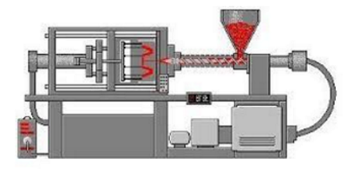
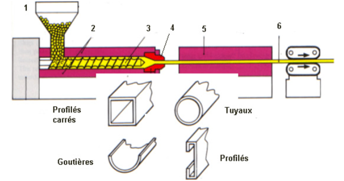
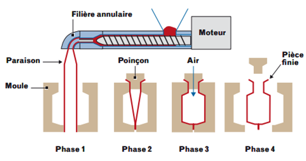
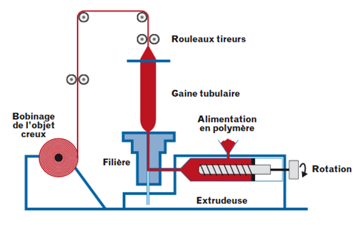
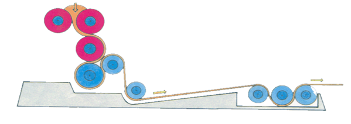
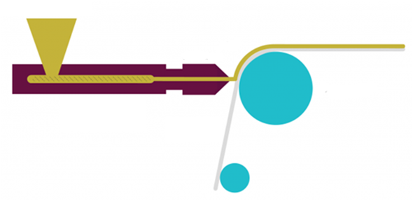
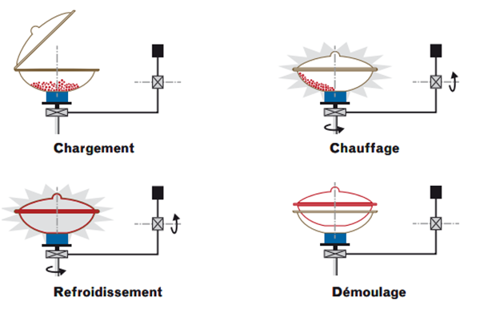
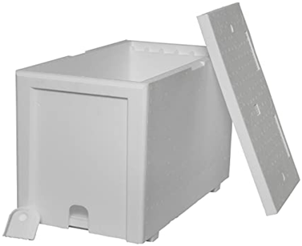
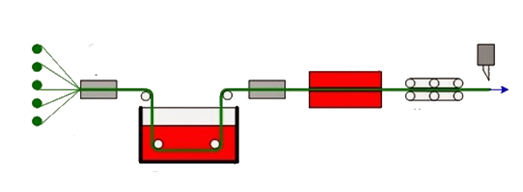
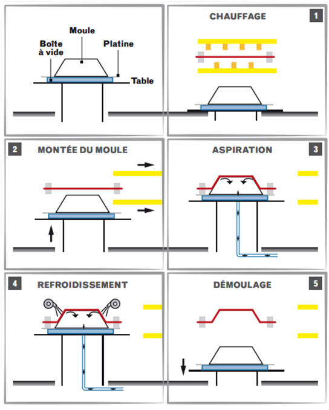

|
|
|
|
| Les
procédés de transformation |
|
|
|
|
|
|
|
|
|
|
 |
La
matière plastique sous forme de granulés, est
versée dans une trémie pour alimenter une vis
sans fin logée dans un tube chauffé.
Elle y est
comprimée, malaxée et chauffée.
Ce
traitement mécanique et thermique fournit une pâte
fondante et homogène sans bulle qui est poussée
par la vis en rotation vers un orifice.
La matière
expulsée sous pression par la vis d’injection
à travers ce trou vient remplir un moule fermé et
refroidi.
|
Au contact des parois froides, elle prend la forme du moule
et se solidifie.
Le moule s’ouvre ensuite pour faire sortir
la pièce.
Pour changer la forme de la pièce, il
suffit de changer de moule.
Ce procédé permet une transformation en
discontinu des thermoplastiques.
C’est une méthode
de production très rapide pour produire des objets en
très grande quantité.
La technique de fabrication
est fréquente pour fabriquer des objets moulés de
qualité, parfois de forme compliquée dans le
domaine de l’automobile, du jouet ou de
l’électronique.
On peut réaliser des
objets très volumineux, par contre, il n’est pas
possible de faire des parois supérieures à 6 mm.
|
|
|
|
|
|
|
|
|
L’extrusion
est un procédé de transformation en continu.
Comme pour l’injection, le granulé entre dans un
tube chauffé muni d’une vis sans fin.
La
matière molle homogénéisée
est poussée, comprimée, puis passe à
travers une filière pour être mise à la
forme souhaitée.
C’est une sorte de «
machine à spaghettis » qui permet obtenir des
produits semi-finis de formes diverses.
On fabrique avec cette
technique de transformation des produits de grande longueur comme des
profilés pour les portes et les fenêtres, des
canalisations, des câbles, des fibres optiques, des tubes,
des grillages, des plaques et des feuilles plastique…
Le
tube ou le profilé sort en continu, il est refroidi pour
être ensuite coupé à la longueur
voulue.
En additionnant plusieurs couches de matière on peut
réaliser des produits ayant des
propriétés combinées.
|
|
 |
1.
La matière est insérée dans
l’extrudeuse (granulé ou poudre)
2. Le cylindre chauffant permet de ramollir la matière
3. La vis sans fin tourne et permet de fondre et
homogénéiser la matière, celle-ci
monte en pression en bout de vis.
4. La matière passe au travers la filière, qui va
donner la forme finale du produit
5. La matière est refroidie et conformée
généralement sous vide (pour conserver les
dimensions)
6. Les profilés sont tirés en bout de ligne puis
coupés à longueur et palettiser |
|
|
|
|
|
|
|
|
L’extrusion
soufflage permet de fabriquer des corps creux.
Cela commence par l’extrusion d’un tube plein
appelé la paraison.
Ce tube de plastique encore chaud sortant de la filière est
coupé et un moule froid en deux parties se referme autour de
lui.
Ensuite, de l’air est injecté dans la
matière par
une canne de soufflage et le polymère vient se plaquer sur
les
parois intérieures du moule qui est rapidement refroidit.
Le procédé se termine par le
démoulage, le
décarottage et l’élimination des
déchets de
moulage de la pièce. |
 |
|
|
|
|
|
|
|
|
C’est
une variante de l’extrusion qui permet de fabriquer des films
plastiques.
Ce procédé consiste en sortie de
l’extrudeuse à dilater avec de l’air
comprimé une gaine polymère
précédemment formée.
La sortie de
l’extrudeuse est verticale, on insuffle de l’air
comprimé dans la matière fondue qui se gonfle et
s’élève verticalement en une longue
bulle de film.
Après refroidissement, des rouleaux
aplatissent le film en une gaine plane qui s’enroule sur des
bobines.
On fabrique ainsi des films utilisés dans la
fabrication d’emballages, de sacs-poubelles, de sacs de
congélation, des poches médicales pour perfusion
et des feuilles souples et fines de revêtements pour serres
horticoles. |
 |
|
|
|
|
|
|
|
|
|
Le calandrage est un
procédé de laminage utilisé pour la
production de feuilles et de films plastiques.
La résine thermoplastique chauffée et fondue est
placée entre des rouleaux chauffants qui opèrent
comme les anciennes essoreuses.
Les rouleaux sont de plusieurs tailles et tournent donc à
des vitesses légèrement différentes
pour transformer le plastique en feuilles ou en fine pellicule.
|
 |
Le film est ensuite refroidi
puis enroulé sur de grosses bobines.
Ce
procédé est souvent utilisé pour
transformer le PVC en produits plats
de grande largeur comme des nappes, des revêtements
d’ameublement ou de
maroquinerie car on peut donner par exemple une texture sur des
matériaux synthétiques qui imitent le cuir. |
|
|
|
|
|
 |
Le principe
de l’enduction consiste à déposer une
résine thermoplastique à l'état
pâteux sur un support continu (tissu, papier), puis
passée au four.
Le film, qui peut être décoré, sert de
protection ou de revêtement.
Ce procédé sert à fabriquer des sols,
des murs, des vêtements, du mobilier… |
|
|
|
|
|
Ce
procédé est utilisé pour fabriquer des
corps creux
comme des kayaks, des planches à voile, des cuves ou des
conteneurs.
Une fine poudre thermoplastique ou un plastisol est enfermé
dans
un moule chauffant qui est mis en rotation suivant deux axes.
Le matériau se répartit uniformément
sur les parois du moule.
Plastisol
[étymologie
possible : « plasti(que) + sol(vant) »] est une
pâte
obtenue par mélange d'une résine
synthétique
poudreuse dans un plastifiant liquide. |
 |
|
|
|
|
|
|
|
|
 |
Le
polystyrène est un polymère qui se
présente avant transformation sous forme de petites billes
non expansées.
Elles renferment des micro-inclusions à
l’état liquide qui se transforment en gaz lors de
l’expansion.
Dans une chaudière, en présence de vapeur
d’eau, la matière se ramollit et le gaz
qu’elle contient se dilate.
Les petites billes gonflent, comme du pop-corn, en gardant une forme
sphérique régulière.
Cette première expansion est réalisée
dans de grandes cuves en inox et
permet d’obtenir jusqu’à 30 fois le
volume initial du polystyrène non
expansé.
|
Dans
un deuxième temps, après séchage, les
billes pré-expansées sont
introduites dans un moule fermé et sont soumises
à une nouvelle
expansion grâce à l’injection de vapeur
d’eau.
Les billes augmentent de volume et collent les unes aux autres dans le
volume intérieur du moule.
Cette
technique est utilisée pour fabriquer toutes sortes
d’emballages en
polystyrène expansé : emballages de protection
pour appareils fragiles,
caisses à poissons, barquettes alimentaires … |
|
|
|
9. |
La
pultrusion (composite) |
|
|
La
pultrusion est un procède automatise permettant la
production de
profiles à section constante de manière continue.
Elle consiste à faire passer des fibres
imprégnées
de résine dans une filière chauffée
où a
lieu la polymérisation.
On obtient, après refroidissement, un profilé
rigide produit en continu. |
 |
|
|
|
|
|
C’est
un procédé de seconde transformation dans lequel
la matière arrive sous forme de plaques, de tubes ou de
profilés.
Le matériau est ramolli par chauffage avant
d’être déformé et mis en
forme par un moule métallique.
La parfaite adhésion du polymère sur le moule se
fait par aspiration sous vide ou par plaquage par injection
d’air.
Il est possible de réaliser des pièces dont les
parois sont fines et des pièces de grande taille.
Les plaques de polystyrène ou d’ABS sont
particulièrement adaptées à ce type de
transformation.
Cette technique est utilisée pour produire des objets aux
formes géométriques simples comme des pots de
yaourts, des cabines de douche, des baignoires, des
éléments de carrosserie.
Il comprend cinq phases :
–
chauffage de la feuille,
– suppression du chauffage et montée du
modèle,
– aspiration de l’air dans l’espace
feuille/modèle,
– refroidissement par soufflage,
– démoulage
|
 |
|
|
|
|
|
|
11. |
La
stratification (composite) |
|
|
|
Le
procédé consiste à superposer des
couches de supports tels que bois, papier, textiles
imprégnées de résine thermodurcissable
puis pressées et chauffées sous haute pression
pour provoquer la polymérisation.
Ce
procédé réservé aux
thermodurcissables n'est applicable qu'à l'obtention de
produits plats.
On le retrouve pour l’hôtellerie
(plateaux), ameublement, panneaux, …
|
|
|
|
|
|
La
matière, sous forme de semi-produits
manufacturés, est transformée par
procédé mécanique, pour
répondre aux besoins de l'industrie en
général, dans les problèmes de
stockage ou transport de substances corrosives ou non.
Cette technique
comporte des opérations de découpe, de formage
à chaud, d'usinage et d'assemblage par soudure avec ou sans
apport de matière.
On retrouve la chaudronnerie dans la
chimie, ingénierie, agroalimentaire, BTP, …
|
|
|
|
|
|
|
|
|
 |
|